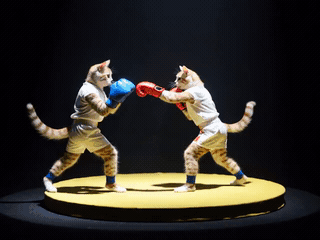
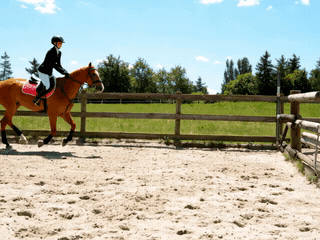
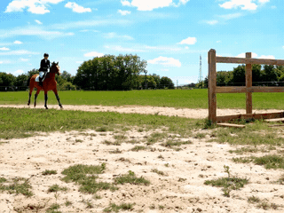
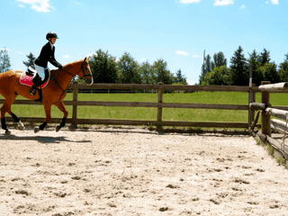

Stable Velocity: A Variance Perspective on Flow Matching
Abstract
By explicitly characterizing the variance of flow matching, we identify 1) a high-variance regime near the prior, where optimization is challenging, and 2) a low-variance regime near the data distribution, where conditional and marginal velocities nearly coincide. Leveraging this insight, we propose Stable Velocity, a unified framework that improves both training and sampling. For training, we introduce Stable Velocity Matching (StableVM), an unbiased variance-reduction objective, along with Variance-Aware Representation Alignment (VA-REPA), which adaptively strengthens auxiliary supervision in the low-variance regime. For inference, we show that dynamics in the low-variance regime admit closed-form simplifications, enabling Stable Velocity Sampling (StableVS), a finetuning-free acceleration.
Variance Analysis of Flow Matching
Conditional Flow Matching (CFM)
Training typically uses the CFM objective:
\( \min_{\boldsymbol{\theta}} \; \mathbb{E}_{t,\, q(\mathbf{x}_0),\, p_t(\mathbf{x}_t|\mathbf{x}_0)} \lambda_t \| \mathbf{v}_{\boldsymbol{\theta}}(\mathbf{x}_t, t) - \mathbf{v}_t(\mathbf{x}_t | \mathbf{x}_0) \|^2 \)
where \( \lambda_t \) is a positive weighting function and \( \mathbf{v}_{\boldsymbol{\theta}} \) is a neural velocity field. The minimizer of CFM is provably the true marginal velocity field:
\( \mathbf{v}^*_{\boldsymbol{\theta}}(\mathbf{x}_t, t) = \mathbb{E}_{p_t(\mathbf{x}_0 \mid \mathbf{x}_t)}\!\left[\mathbf{v}_t(\mathbf{x}_t \mid \mathbf{x}_0)\right] = \mathbf{v}_t(\mathbf{x}_t) \)
Variance of CFM
Although unbiased, the CFM target is only a single-sample Monte Carlo estimator of the marginal velocity, which can exhibit high variance. We quantify this variance by the average trace of the conditional velocity covariance at time \( t \):
\( \mathcal{V}_{\text{CFM}}(t) = \mathbb{E}_{p_t(\mathbf{x}_t)}\!\left[\mathrm{Tr}\!\left(\mathrm{Cov}_{p_t(\mathbf{x}_0 \mid \mathbf{x}_t)}\!\big(\mathbf{v}_t(\mathbf{x}_t \mid \mathbf{x}_0)\big)\right)\right] \)
\( = \mathbb{E}_{q(\mathbf{x}_0),\, p_t(\mathbf{x}_t|\mathbf{x}_0)}\!\left[\| \mathbf{v}_t(\mathbf{x}_t \mid \mathbf{x}_0) - \mathbf{v}_t(\mathbf{x}_t) \|^2\right] \)
We evaluate \( \mathcal{V}_{\text{CFM}}(t) \) on Gaussian mixture models (GMMs), CIFAR-10, and ImageNet latent codes produced by the pretrained Stable Diffusion VAE. As shown below, two consistent patterns emerge:
Low- vs. high-variance regimes. \( \mathcal{V}_{\text{CFM}}(t) \) remains close to zero at small \( t \) but increases rapidly as \( t \) grows, naturally separating the process into a low-variance regime (\( 0 \le t < \xi \)) and a high-variance regime (\( \xi \le t \le 1 \)).
Effect of dimensionality. As data dimensionality increases, the split point \( \xi \) shifts toward \( 1 \), enlarging the low-variance regime while also increasing the overall variance magnitude.

Illustration of CFM variance \( \mathcal{V}_{\text{CFM}}(t) \). (a) The low-variance regime (\( t \le \xi \)), where the posterior \( p_t(\mathbf{x}_0 \mid \mathbf{x}_t) \) is sharply concentrated and the conditional velocity \( \mathbf{v}_t(\mathbf{x}_t \mid \mathbf{x}_0) \) nearly coincides with the true velocity \( \mathbf{v}_t(\mathbf{x}_t) \), yielding \( \mathcal{V}_{\text{CFM}}(t) \approx 0 \). (b) The high-variance regime (\( t > \xi \)), the posterior spreads over multiple reference samples, causing the conditional velocity to fluctuate and resulting in a large \( \mathcal{V}_{\text{CFM}}(t) \).
Stable Velocity Matching (StableVM) & VA-REPA
StableVM
We propose Stable Velocity Matching (StableVM), a variance-reduced yet unbiased alternative to CFM. Given \( n \) reference samples \( \{\mathbf{x}_0^i\}_{i=1}^n \) drawn i.i.d. from \( q(\mathbf{x}_0) \), we sample \( \mathbf{x}_t \) from a composite conditional path \( p_t^{\text{GMM}}\!\left(\mathbf{x}_t \mid \{\mathbf{x}_0^i\}_{i=1}^n\right) := \frac{1}{n}\sum_{i=1}^{n} p_t(\mathbf{x}_t \mid \mathbf{x}_0^i) \), and train a neural velocity field \( \mathbf{v}_\theta(\mathbf{x}_t, t) \) by minimizing:
\[ \mathcal{L}_{\text{StableVM}}(\boldsymbol{\theta}) = \mathbb{E}_{\substack{t,\, \{\mathbf{x}_0^i\} \sim q^n \\ \mathbf{x}_t \sim p_t^{\text{GMM}}}} \left\| \mathbf{v}_{\boldsymbol{\theta}}(\mathbf{x}_t, t) - \frac{\sum_{k=1}^n p_t(\mathbf{x}_t \mid \mathbf{x}_0^k)\, \mathbf{v}_t(\mathbf{x}_t \mid \mathbf{x}_0^k)}{\sum_{j=1}^n p_t(\mathbf{x}_t \mid \mathbf{x}_0^j)} \right\|^2 \]
- Unbiased estimator of the true marginal velocity \( \mathbf{v}_t(\mathbf{x}_t) \)
- Strictly lower variance than standard CFM
- Compatible with general stochastic interpolants
Variance-Aware Representation Alignment (VA-REPA)
Representation alignment methods (e.g., REPA) are effective only when the noisy input retains semantic information. From a variance perspective, this occurs exclusively in the low-variance regime.
Applying representation alignment uniformly along the diffusion trajectory introduces noisy supervision. VA-REPA activates alignment only in the low-variance regime, leading to consistent improvements over REPA as well as its variants.
Results
We compare StableVM + VA-REPA against state-of-the-art latent diffusion transformers and representation alignment methods on ImageNet 256×256. With CFG, our method achieves FID = 1.33 with only 480 epochs. Without CFG, our approach consistently outperforms REPA across all model sizes (SiT-B/2, SiT-L/2, SiT-XL/2) and training iterations.
With CFG
Without CFG
StableVM and VA-REPA are general-purpose training objectives that are fully compatible with existing representation alignment approaches. When combined with REPA, REG, and iREPA, StableVM consistently improves their performance across all metrics.
Stable Velocity Sampling (StableVS)
In the low-variance regime, the probability flow dynamics admit closed-form simplifications.
StableVS for SDE
For the reverse SDE, we derive the following DDIM-style posterior:
\( p_\tau(\mathbf{x}_\tau \mid \mathbf{x}_t, \mathbf{v}_t(\mathbf{x}_t)) = \mathcal{N}\!\left(\boldsymbol{\mu}_{\tau \mid t},\; \beta_t^2 \mathbf{I}\right) \)
where \( \beta_t = f_\beta \sigma_\tau \) and \( f_\beta \in [0,1] \) is a controllable parameter. We then define the noise ratio \( \rho_t := \sqrt{(\sigma_\tau^2 - \beta_t^2)/\sigma_t^2} \) and the velocity coupling coefficient \( \lambda_t := \frac{\alpha_\tau - \alpha_t \rho_t}{\alpha_t' - \alpha_t \sigma_t'/\sigma_t} \). The posterior mean \( \boldsymbol{\mu}_{\tau \mid t} \) is then given by:
\( \boldsymbol{\mu}_{\tau \mid t} = \left(\rho_t - \lambda_t \frac{\sigma_t'}{\sigma_t}\right) \mathbf{x}_t + \lambda_t \mathbf{v}_t(\mathbf{x}_t) \)
StableVS for ODE
For the probability flow ODE, we define the integral factor \( \Psi_{t,\tau} := \frac{1}{C_t}\int_{t}^{\tau} \frac{C(s)}{\sigma_s}\, ds \), where \( C(s) = \alpha_s' - \alpha_s \sigma_s'/\sigma_s \). The exact solution at timestep \( \tau \) is:
\( \mathbf{x}_{\tau} = \sigma_{\tau} \left[\left(\frac{1}{\sigma_{t}} - \frac{\sigma_{t}'}{\sigma_{t}} \Psi_{t,\tau}\right) \mathbf{x}_{t} + \Psi_{t,\tau}\, \mathbf{v}_{t}(\mathbf{x}_{t})\right] \)
In the special case of linear interpolant (i.e., \( \alpha_t = 1 - t \), \( \sigma_t = t \)), setting \( \beta_t = 0 \) makes the two samplers coincide:
\( \mathbf{x}_{\tau} = \mathbf{x}_{t} + (\tau - t)\, \mathbf{v}_{t}(\mathbf{x}_{t}) \)
In the low-variance regime, the probability flow trajectory reduces to a straight line with constant velocity, allowing exact integration via Euler steps of arbitrary size.
Qualitative Comparisons: Text-to-Image
StableVS on SD3.5
Prompt: "A turquoise river winds through a lush canyon. Thick moss and dense ferns blanket the rocky walls; multiple waterfalls cascade from above, enveloped in mist. At noon, sunlight filters through the dense canopy, dappling the river surface with shimmering light. The atmosphere is humid and fresh, pulsing with primal jungle vitality. No humans, text, or artificial traces present."
| Euler (30 steps) | Euler (20 steps) | Euler (11) + StableVS (9) |
|---|---|---|
StableVS on Flux
Prompt: "A cat holding a sign that says Stable Velocity"
| Euler (30 steps) | Euler (20 steps) | Euler (11) + StableVS (9) |
|---|---|---|
StableVS on Qwen-Image
Prompt: "A 20-year-old East Asian girl with delicate, charming features and large, bright brown eyes—expressive and lively, with a cheerful or subtly smiling expression. Her naturally wavy long hair is either loose or tied in twin ponytails. She has fair skin and light makeup accentuating her youthful freshness. She wears a modern, cute dress or relaxed outfit in bright, soft colors—lightweight fabric, minimalist cut. She stands indoors at an anime convention, surrounded by banners, posters, or stalls. Lighting is typical indoor illumination—no staged lighting—and the image resembles a casual iPhone snapshot: unpretentious composition, yet brimming with vivid, fresh, youthful charm."
| Euler (30 steps) | Euler (17 steps) | Euler (8) + StableVS (9) |
|---|---|---|
Qualitative Comparisons: Text-to-Video
StableVS on Wan2.2
Prompt: "Two anthropomorphic cats in comfy boxing gear and bright gloves fight intensely on a spotlighted stage."
| UniPC (30 steps) | UniPC (20 steps) | UniPC (11) + StableVS (9) |
|---|---|---|
|  |
Prompt: "A horse jumps over a fence."
| UniPC (30 steps) | UniPC (20 steps) | UniPC (11) + StableVS (9) |
|---|---|---|
|  |  |  |
Citation
@misc{yang2026stablevelocityvarianceperspective,
title={Stable Velocity: A Variance Perspective on Flow Matching},
author={Donglin Yang and Yongxing Zhang and Xin Yu and Liang Hou and Xin Tao and Pengfei Wan and Xiaojuan Qi and Renjie Liao},
year={2026},
eprint={2602.05435},
archivePrefix={arXiv},
primaryClass={cs.CV},
url={https://arxiv.org/abs/2602.05435},
}